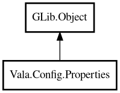

Properties
Object Hierarchy:

Description:
public class Properties : Object
Java-like key-value properties container.
Content:
Creation methods:
Methods:
- public string? @get (string key)
Returns value by key.
- public void @set (string key, string value)
Sets key-value pair.
- public string getOrDefault (string key, string defaultValue)
Returns value or default when missing.
- public string[] keys ()
Returns all keys.
- public bool load (Path path)
Loads properties from file.
- public bool remove (string key)
Removes a key.
- public bool save (Path path)
Saves properties to file.
- public uint size ()
Returns number of entries.
Inherited Members:
All known members inherited from class GLib.Object
- @get
- @new
- @ref
- @set
- add_toggle_ref
- add_weak_pointer
- bind_property
- connect
- constructed
- disconnect
- dispose
- dup_data
- dup_qdata
- force_floating
- freeze_notify
- get_class
- get_data
- get_property
- get_qdata
- get_type
- getv
- interface_find_property
- interface_install_property
- interface_list_properties
- is_floating
- new_valist
- new_with_properties
- newv
- notify
- notify_property
- ref_count
- ref_sink
- remove_toggle_ref
- remove_weak_pointer
- replace_data
- replace_qdata
- set_data
- set_data_full
- set_property
- set_qdata
- set_qdata_full
- set_valist
- setv
- steal_data
- steal_qdata
- thaw_notify
- unref
- watch_closure
- weak_ref
- weak_unref